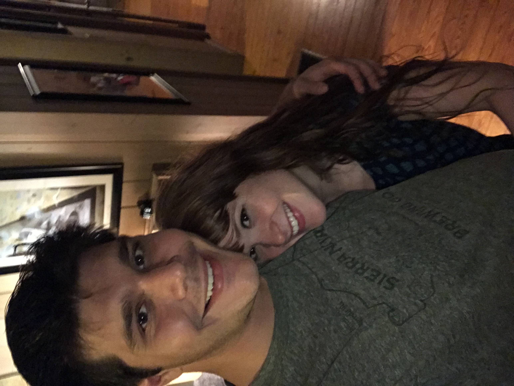

In my spare time, I enjoy spending time outdoors with my girlfriend Ruth and our two dogs. I also enjoy cooking and trying out new recipes. I am also an avid follower of the Mighty Georgia Bulldogs, Go Dawgs!
About Me
I am majoring in cybersecurity here at Kennesaw State. I started at KSU in winter semester of 2021. This is my second time in college, as I previously graduated from UGA with a degree in Agricultural Science in 2016.
I currently work as help desk support at NGHS hospital system based out of Gainesville, GA. I started in this role in the fall of 2022 and my primary duties are resolving or triaging incidents reported by users and ensuring that they get assigned to the correct team with the proper priority. I am currently studying for my Certified System Administrator credential for ServiceNow.